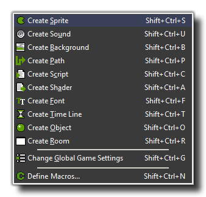

In this menu, you can create a new resource for each of the
different types as well as change the global game settings, add
Macros, and select files to include in the final game (more
information on each of these items can be found further on in the
manual). For each of these commands there is also a button on the
tool-bar and a keyboard shortcut.
- Create <Resource>: Creates a new resource of the type selected. A form will then open in which you can change the properties of that resource (more on each of the resources in the following sections of the manual)
- Change Global Game Settings: This opens the Global Game Settings window where you can change many things relating to how your game behaves. More information can be found here.
- Define Macros: This will open a further window where you can define your own constants and macros for use within your projects. More information can be found here.
Note that many of these commands can also be given by right-clicking on a resource (or a resource group), and then using the appropriate action from the pop-up menu.